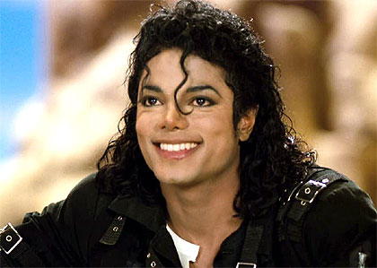

MUSIC
Music definition
Music is an art form that uses sound and rhythm to communicate emotions,
ideas, and experiences to an audience.
It involves a combination of melody,
harmony, rhythm, and timbre (tone color) to create a unique and expressive form of art.
Music can be created using a wide variety of instruments, including vocals, guitars, drums,
pianos, and many others.
It can also be produced using electronic means, such as digital
synthesizers and computer software.

History
Music history refers to the study of music from its earliest forms to the present day.
It involves the exploration of the various styles,
genres, and cultural
influences that have shaped the development of music throughout history.
The history of music can be traced back thousands of years, with evidence
of musical instruments and practices found in ancient cultures
across the world.
Throughout history, music has played an important role in religious, political,
and social contexts, and has been used for everything
from entertainment to
spiritual or therapeutic purposes.
Some significant periods and movements in music history include:
- Medieval Music (500-1400): This period saw the development of Gregorian chant and the emergence of polyphony in Western music.
- Renaissance Music (1400-1600): This period saw the rise of humanism and the development of complex polyphonic vocal music and instrumental music.
- Baroque Music (1600-1750): This period was characterized by ornate and elaborate music, including the development of opera and instrumental music such as the concerto and sonata.
- Classical Music (1750-1820): This period saw the emergence of the symphony and the sonata form, as well as the works of famous composers such as Mozart, Beethoven, and Haydn.
- Romantic Music (1820-1900): This period was marked by emotional and expressive music, including the development of program music and the use of larger orchestras.
- 20th Century Music: This period saw the rise of various styles and movements, including jazz, blues, rock, and electronic music, as well as the emergence of experimental and avant-garde music.

Music genres
Music genres refer to the different styles and categories of music
that have developed over time. There are countless music genres,
but here are some of the most popular ones:
- Pop: a popular genre that features catchy melodies, upbeat rhythms, and often focuses on love and relationships.
- Rock: a genre that features amplified guitars, drums, and bass, often with a strong emphasis on lyrics and vocals.
- Hip-Hop: a genre that originated in African American and Latino communities in the United States, featuring rap vocals, beats, and samples from other music.
- Electronic: a genre that features electronic music production and is characterized by its use of synthesizers, drum machines, and other electronic instruments.
- Jazz: a genre that originated in African American communities and features improvisation, complex rhythms, and harmony.
- Classical: a genre of music that has its roots in Western traditions and is characterized by its complex arrangements, orchestration, and structure.
- Country: a genre that is rooted in American folk music and features acoustic instruments such as guitars, fiddles, and banjos, often with a focus on storytelling.
- Blues: a genre that originated in African American communities in the United States and features a 12-bar harmonic structure and expressive, emotional lyrics.
Top famous musicians
There are many famous musicians across different genres and styles of music,
and it can be difficult to determine who are the "top" musicians. However,
here are a few examples of some of the most famous and influential musicians
in history:
- Wolfgang Amadeus Mozart: an Austrian composer and musician who
lived in the late 18th century and is widely considered one of
the greatest composers of all time, known for his innovative and
influential works in a wide range of musical genres.

- Ludwig van Beethoven: a German composer and pianist who lived in the late
18th and early 19th centuries and is widely regarded as one of the greatest
composers in Western classical music history.
- Elvis Presley: an American singer and musician who rose to fame in the 1950s and became
known as the "King of Rock and Roll" for his contributions to the development of rock music.
- The Beatles: a British band that formed in the 1960s and became one of the most influential
and successful bands in history, known for their innovative and diverse music and cultural impact.
- Michael Jackson: an American singer, songwriter, and dancer who rose to fame in the 1980s and became
known as
the "King of Pop" for his innovative and influential music, videos, and performances.
 - Bob Dylan: an American singer-songwriter and musician who emerged in the 1960s as a leading
figure in the American folk music revival and went on to become one of the most influential
and respected musicians of his generation.
- Beyoncé: an American singer, songwriter, and actress who has become
one of the most successful and influential musicians of the 21st century,
known for her powerful vocals, dynamic performances, and cultural impact.